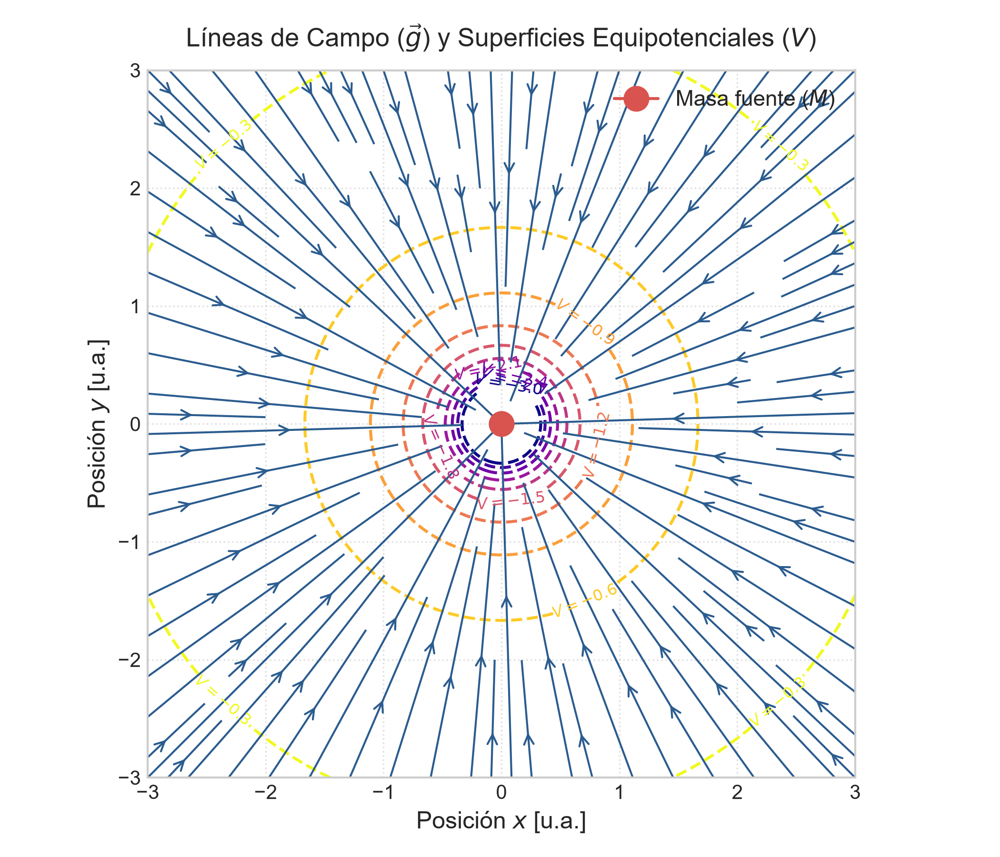
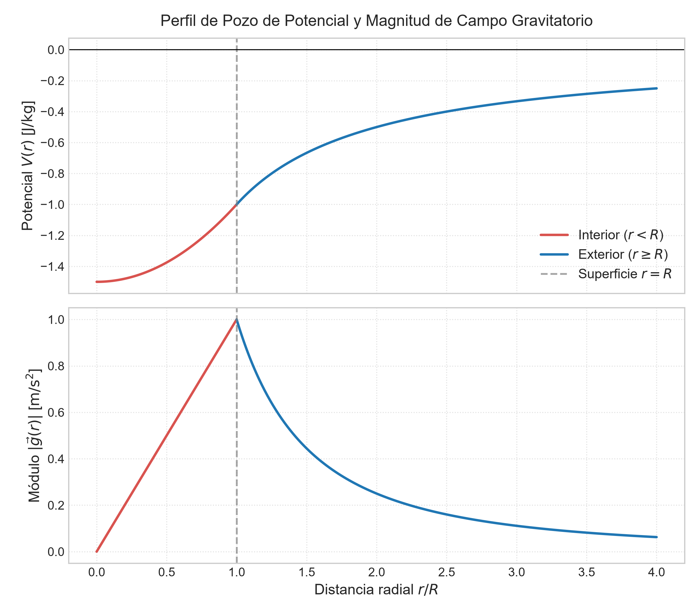

🌌 Tema 1.2: Campo y Potencial Gravitatorio
Intuición y Propósito del Tema: * El problema: La masa no "sabe" mágicamente que otra masa está cerca; altera la estructura geométrica del espacio a su alrededor. * En criollo: Una masa \(M\) crea un "pozo" o deformación en el espacio. Cualquier masa de prueba \(m_0\) sumergida en ese espacio siente una fuerza que la arrastra hacia el fondo del pozo. * Eje Conceptual: Unificamos la descripción vectorial del Campo Gravitatorio (\(\vec{g}\)) (la fuerza por unidad de masa) con la descripción escalar del Potencial Gravitatorio (\(V\)) (la energía por unidad de masa), conectadas mediante la relación de gradiente \(\vec{g} = -\nabla V\).
📌 Contenido de esta nota (Índice interactivo)
- 1. Traductor de Lenguaje Físico y Notación
- 2. Vector Campo Gravitatorio (\vec{g})
- 3. Potencial Gravitatorio (V) y Energía Potencial (U)
- 4. Relación de Gradiente y Superficies Equipotenciales
- 5. Campo y Potencial en Distribuciones Continuas Clásicas
1. Traductor de Lenguaje Físico y Notación
| Símbolo Formal | Lectura Universitaria | Significado Físico / Intuición | Unidades (SI) |
|---|---|---|---|
| \(\vec{g}\) | Vector Campo Gravitatorio | Intensidad del campo en un punto. Mide la aceleración que experimentaría una masa libre en ese lugar. | \(\text{N/kg}\) o \(\text{m/s}^2\) |
| \(V\) | Potencial Gravitatorio | Escalar que mide el "nivel de altura o energía" del espacio en un punto. Siempre es negativo en un sistema ligado. | \(\text{J/kg}\) o \(\text{m}^2/\text{s}^2\) |
| \(U\) | Energía Potencial Gravitatoria | Energía almacenada por la interacción de un sistema de masas: \(U = m_0 V\). | \(\text{J}\) (\(\text{kg}\cdot\text{m}^2/\text{s}^2\)) |
| \(\nabla\) | Operador Gradiente | Vector de derivadas parciales \(\left(\frac{\partial}{\partial x}, \frac{\partial}{\partial y}, \frac{\partial}{\partial z}\right)\). Mide la máxima pendiente de cambio. | \(\text{m}^{-1}\) |
| \(W_{\text{campo}}\) | Trabajo Realizado por el Campo | Trabajo de la fuerza gravitatoria. Se relaciona con el potencial como \(W_{\text{campo}} = -m_0 \Delta V\). | \(\text{J}\) |
2. Vector Campo Gravitatorio (\(\vec{g}\))
Definición Formal (Cátedra UNCA)
El campo gravitatorio \(\vec{g}\) en un punto del espacio se define como la fuerza gravitatoria \(\vec{F}_g\) ejercida sobre una masa de prueba \(m_0\) ubicada en dicho punto, por unidad de masa de prueba cuando esta tiende a cero:
Para una masa puntual fuente \(M\): $\(\vec{g}(r) = -G \frac{M}{r^2} \hat{r}\)$
- Propiedades Claves:
- Independencia de la prueba: \(\vec{g}\) es una propiedad exclusiva del espacio generada por la masa fuente \(M\). No depende de \(m_0\).
- Principio de Superposición Vectorial: Para \(N\) masas puntuales: $\(\vec{g}_{\text{total}} = \sum_{i=1}^N \vec{g}_i = -G \sum_{i=1}^N \frac{M_i}{r_i^2} \hat{r}_i\)$
3. Potencial Gravitatorio (\(V\)) y Energía Potencial (\(U\))
Deducción Teórica del Potencial
Dado que el campo \(\vec{g}\) es conservativo (\(\nabla \times \vec{g} = \vec{0}\)), el trabajo realizado por el campo sobre una masa de prueba \(m_0\) al moverla desde un punto \(A\) hasta un punto \(B\) no depende de la trayectoria:
Se define la Energía Potencial Gravitatoria \(U(r)\) fijando el nivel de referencia nulo en el infinito (\(U(\infty) = 0\)):
Dividiendo \(U(r)\) por la masa de prueba \(m_0\), obtenemos el Potencial Gravitatorio Escalar \(V(r)\):
💡 ¿Por qué el Potencial Gravitatorio es Siempre Negativo?
Como la fuerza gravitatoria es atractiva, debemos realizar trabajo en contra del campo para alejar un objeto hacia el infinito (\(r \to \infty\)). Si asignamos \(V(\infty) = 0\), todos los puntos finitos del universo se encuentran atrapados en un pozo de potencial negativo (\(V(r) < 0\)).
4. Relación de Gradiente y Superficies Equipotenciales
🗺️ Analogía Topográfica y Gradiente
El potencial \(V(x,y,z)\) actúa como la "altitud" en una montaña. El campo \(\vec{g}\) representa la dirección de caída de máxima pendiente:
- En coordenadas esféricas con simetría radial: \(\vec{g}(r) = -\frac{d V}{d r} \hat{r}\).
Superficies Equipotenciales
Una superficie equipotencial es el lugar geométrico donde el potencial toma un valor constante (\(V = \text{Cte} \implies dV = 0\)).
- Condición de Ortogonalidad: Como \(dV = -\vec{g} \cdot d\vec{r} = 0\), el campo gravitatorio \(\vec{g}\) es estrictamente perpendicular (ortogonal) a la superficie equipotencial en cada punto.
- Para una masa puntual, las equipotenciales son esferas concéntricas.

5. Campo y Potencial en Distribuciones Continuas Clásicas
Para un cuerpo masivo extendido con densidad \(\rho\), sumamos infinitesimales \(dm\):
A. Anillo Masivo Uniforme (En un punto sobre su eje \(z\))
Para un anillo de radio \(R\) y masa total \(M\):
- Potencial sobre el eje:
$\(V(z) = -G \frac{M}{\sqrt{z^2 + R^2}}\)$ - Campo sobre el eje (vía gradiente \(g_z = -dV/dz\)):
$\(\vec{g}(z) = -G \frac{M z}{(z^2 + R^2)^{3/2}} \hat{k}\)$
B. Esfera Masiva Uniforme (Sólida de Radio \(R\) y Masa \(M\))

- Exterior (\(r \ge R\)): Se comporta idénticamente a una masa puntual concentrada en el centro: $\(V_{\text{ext}}(r) = -G \frac{M}{r} \quad | \quad \vec{g}_{\text{ext}}(r) = -G \frac{M}{r^2} \hat{r}\)$
- Interior (\(r < R\)): $\(V_{\text{int}}(r) = -\frac{GM}{2R} \left(3 - \frac{r^2}{R^2}\right) \quad | \quad \vec{g}_{\text{int}}(r) = -G \frac{M}{R^3} r \hat{r}\)$
⚠️ 6. Trampas y Errores Típicos en Exámenes (UNCA)
⚠️ Trampa 1: Error de Signos en el Cálculo del Trabajo (\(W_{\text{campo}}\) vs. \(W_{\text{agente externo}}\))
Error común: Confundir el trabajo que realiza el propio campo gravitatorio con el trabajo necesario que realiza una fuerza externa para mover una masa.
Ecuaciones Inviolables de Parcial: * Trabajo realizado por el campo gravitatorio:
$\(W_{\text{campo}} = -\Delta U = -m_0 (V_B - V_A) = m_0 (V_A - V_B)\)$ * Trabajo realizado por un agente externo (a velocidad constante, \(\Delta K = 0\)):
$\(W_{\text{ext}} = +\Delta U = m_0 (V_B - V_A)\)$ Explicación para Parcial: Si acercamos una masa a otra, el campo realiza trabajo positivo (\(W_{\text{campo}} > 0\)), reduciendo la energía potencial del sistema. Un agente externo debe realizar trabajo negativo para frenarla o retenerla.⚠️ Trampa 2: Sumar Vectorialmente Potenciales o Escalarmente Campos
Error grave de concepto: Tratar el campo \(\vec{g}\) como un escalar o el potencial \(V\) como un vector.
Criterio de Cátedra: * \(\vec{g}\) es un vector: Se descompone obligatoriamente en componentes Cartesianas (\(g_x, g_y, g_z\)) usando senos/cosenos antes de sumar. * \(V\) es un escalar: Se suma algebraicamente conservando los signos negativos de cada término (\(V_{\text{total}} = V_1 + V_2 + \dots\)). ¡Jamás lleva componentes ni ángulos!⚠️ Trampa 3: Descontinuidad e Integración Errónea en Distribuciones Continuas
Error común: Olvidar que el potencial \(V(r)\) debe ser una función continua en las fronteras (por ejemplo, en \(r = R\) en una esfera uniforme).
Regla de Validación: Al evaluar la fórmula del interior \(V_{\text{int}}(R)\) y del exterior \(V_{\text{ext}}(R)\), ambas expresiones deben dar exactamente el mismo valor:
$\(V_{\text{int}}(R) = -\frac{GM}{2R}(3 - 1) = -\frac{GM}{R} = V_{\text{ext}}(R)\)$
📝 7. Ejercicios Resueltos Paso a Paso de Parcial
Ejercicio 1 (Sistema Discreto de Masas Puntuales - Parcial UNCA):
Tres masas puntuales de \(M_1 = 100\,\text{kg}\), \(M_2 = 200\,\text{kg}\) y \(M_3 = 100\,\text{kg}\) se ubican en las esquinas de un cuadrado de lado \(a = 2\,\text{m}\) sobre el plano \(xy\): \(M_1\) en \((0,a)\), \(M_2\) en \((0,0)\) y \(M_3\) en \((a,0)\).
1. Calcular el vector campo gravitatorio total \(\vec{g}\) en la esquina vacía \(P(a,a)\).
2. Calcular el potencial gravitatorio \(V\) en el punto \(P(a,a)\).
3. Calcular el trabajo necesario realizado por un agente externo para traer una cuarta masa \(m_0 = 10\,\text{kg}\) desde el infinito hasta \(P(a,a)\).
Desarrollo Paso a Paso (Ejercicio 1):
- Paso 1: Cálculo de Distancias y Vectores Unitarios hacia \(P(a,a)\)
- Distancia de \(M_1(0,a)\) a \(P(a,a)\): \(r_1 = a = 2\,\text{m}\) (Dirección \(+\hat{i}\)).
- Distancia de \(M_3(a,0)\) a \(P(a,a)\): \(r_3 = a = 2\,\text{m}\) (Dirección \(+\hat{j}\)).
-
Distancia de \(M_2(0,0)\) a \(P(a,a)\): \(r_2 = \sqrt{a^2 + a^2} = a\sqrt{2} = 2\sqrt{2}\,\text{m}\) (Ángulo \(\theta = 45^\circ\)).
-
Paso 2: Componentes del Campo Gravitatorio Total \(\vec{g}_P\)
- Nota: El campo siempre apunta hacia las masas fuentes.
- Componente \(g_x\):
$\(g_x = -G \frac{M_1}{r_1^2} - G \frac{M_2}{r_2^2} \cos(45^\circ) = -G \left( \frac{100}{2^2} + \frac{200}{(2\sqrt{2})^2} \frac{\sqrt{2}}{2} \right)\)$ $\(g_x = -G \left( 25 + 25\sqrt{2} \right) \approx -60,355 \cdot G = -4,028 \times 10^{-9}\,\text{m/s}^2\)$ - Componente \(g_y\):
$\(g_y = -G \frac{M_3}{r_3^2} - G \frac{M_2}{r_2^2} \operatorname{sen}(45^\circ) = -G \left( \frac{100}{2^2} + \frac{200}{8} \frac{\sqrt{2}}{2} \right)\)$ $\(g_y = -G \left( 25 + 17,677 \right) \approx -60,355 \cdot G = -4,028 \times 10^{-9}\,\text{m/s}^2\)$ -
Vector Campo Final:
$\(\vec{g}_P = (-4,03 \hat{i} - 4,03 \hat{j}) \times 10^{-9}\,\text{m/s}^2\)$ -
Paso 3: Cálculo del Potencial Gravitatorio Escalar \(V_P\) $\(V_P = -G \sum_{i=1}^3 \frac{M_i}{r_i} = -G \left( \frac{M_1}{a} + \frac{M_2}{a\sqrt{2}} + \frac{M_3}{a} \right)\)$ $\(V_P = -G \left( \frac{100}{2} + \frac{200}{2\sqrt{2}} + \frac{100}{2} \right) = -G \left( 50 + 70,71 + 50 \right)\)$ $\(V_P = -G (170,71) \approx -1,139 \times 10^{-8}\,\text{J/kg}\)$
-
Paso 4: Cálculo del Trabajo del Agente Externo desde el Infinito Como \(V(\infty) = 0\): $\(W_{\text{ext}} = m_0 (V_P - V_\infty) = m_0 V_P\)$ $\(W_{\text{ext}} = (10\,\text{kg}) \cdot (-1,139 \times 10^{-8}\,\text{J/kg}) = -1,139 \times 10^{-7}\,\text{J}\)$ Interpretación: El trabajo del agente externo es negativo, lo que indica que el agente debe frenar la masa \(m_0\), ya que la atracción gravitatoria del sistema la atrae espontáneamente hacia el pozo de potencial.
Ejercicio 2 (Potencial de Anillo Masivo - Parcial UNCA):
Demostrar que el potencial sobre el eje de un anillo masivo \(V(z) = -G \frac{M}{\sqrt{z^2 + R^2}}\) tiende al comportamiento de una masa puntual cuando \(z \gg R\).
Desarrollo Formal de Parcial:
-
Paso 1: Extracción del Término Dominante en la Raíz $\(V(z) = -G \frac{M}{\sqrt{z^2 \left(1 + \frac{R^2}{z^2}\right)}} = -G \frac{M}{|z| \sqrt{1 + \frac{R^2}{z^2}}}\)$
-
Paso 2: Aplicación del Límite de Aproximación (\(z \gg R\)) Cuando \(z \to \infty\), la relación \(\frac{R^2}{z^2} \to 0\). Aplicando la aproximación binomial \((1 + x)^{-1/2} \approx 1 - \frac{1}{2}x\): $\(V(z) \approx -G \frac{M}{z} \left( 1 - \frac{1}{2} \frac{R^2}{z^2} \right) \xrightarrow{z \gg R} -G \frac{M}{z}\)$ Conclusión: A distancias muy grandes comparadas con el radio del anillo (\(z \gg R\)), la geometría extendida se vuelve despreciable y el campo/potencial coincide exactamente con el de una masa puntual \(M\).
8. Conexión con el Siguiente Tema (Leyes de Conservación)
El análisis del pozo de potencial \(-GM/r\) nos brinda la herramienta matemática fundamental para abordar el Tema 1.3: Conservación de la Energía Mecánica y Órbitas Satelitales: * Evaluaremos la energía mecánica total \(E = K + U = \frac{1}{2}mv^2 - \frac{GMm}{r}\). * Demostraremos cómo el valor y signo de \(E\) clasifica las cónicas de las órbitas (Elíptica/Circular si \(E < 0\), Parabólica si \(E = 0\), Hiperbólica si \(E > 0\)). * Derivaremos analíticamente la Velocidad de Escape (\(v_e\)).
🔗 Enlaces Relacionados
- ⬅️ Tema 1.1: Ley de Gravitación Universal y Leyes de Kepler
- [[1.3-Energia-Orbital-y-Velocidad-de-Escape|➡️ Tema 1.3: Energía Orbital y Velocidad de Escape]]
- 📚 Menú Principal de Física II
Referencias
- Cátedra: Física II – UNCA (Unidad 1: Gravitación y Mecánica Celeste, Sección 1.2).